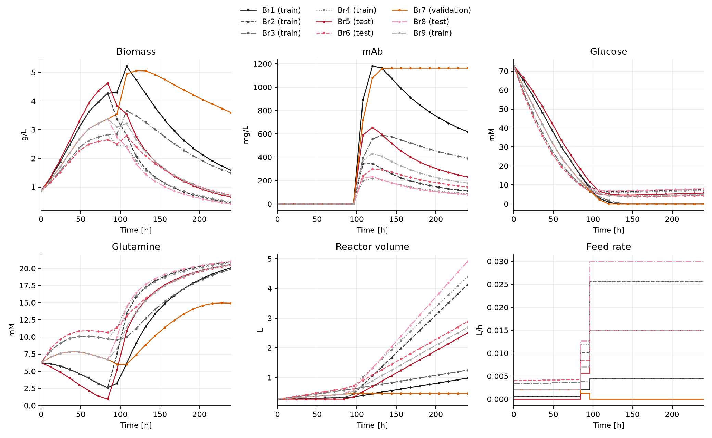
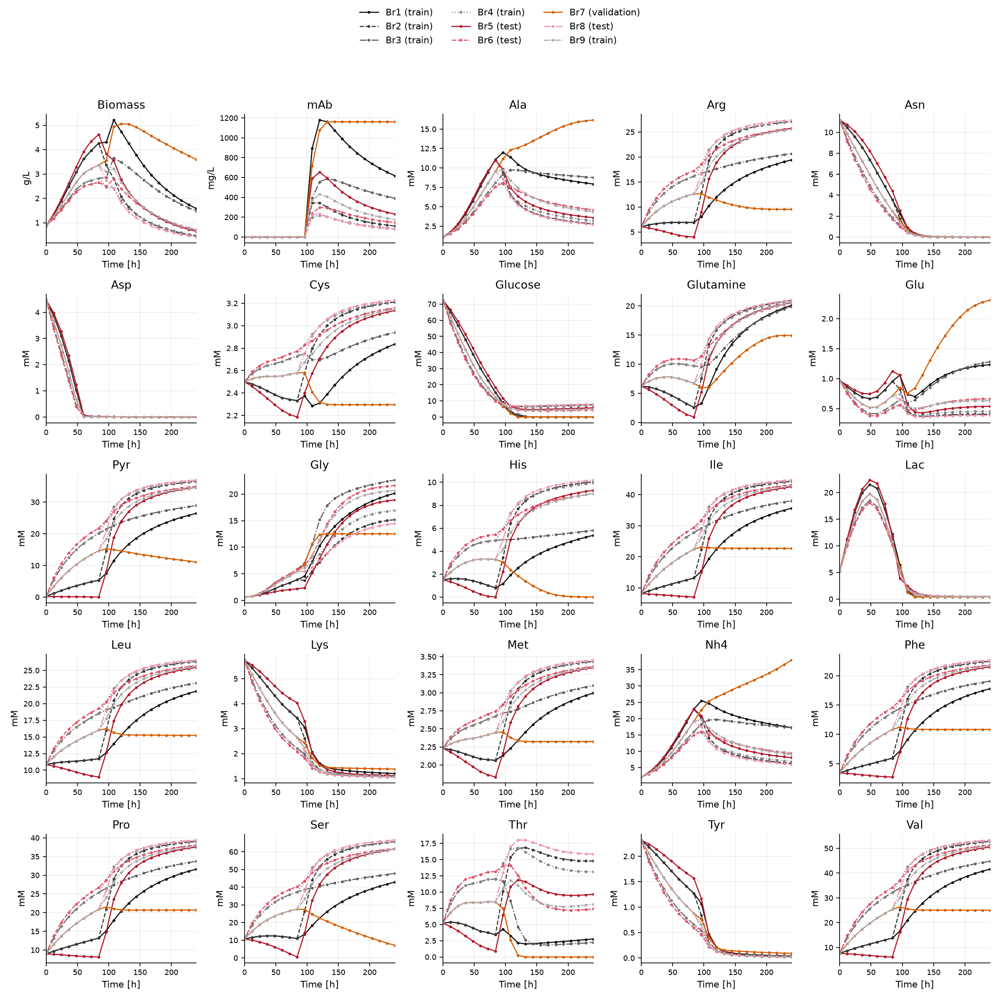
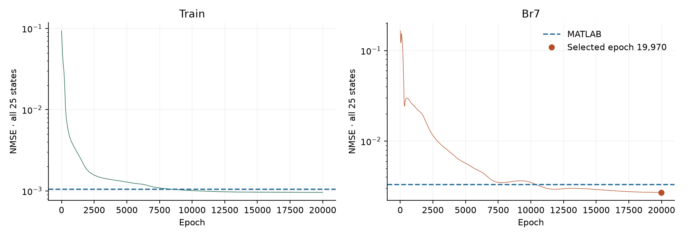
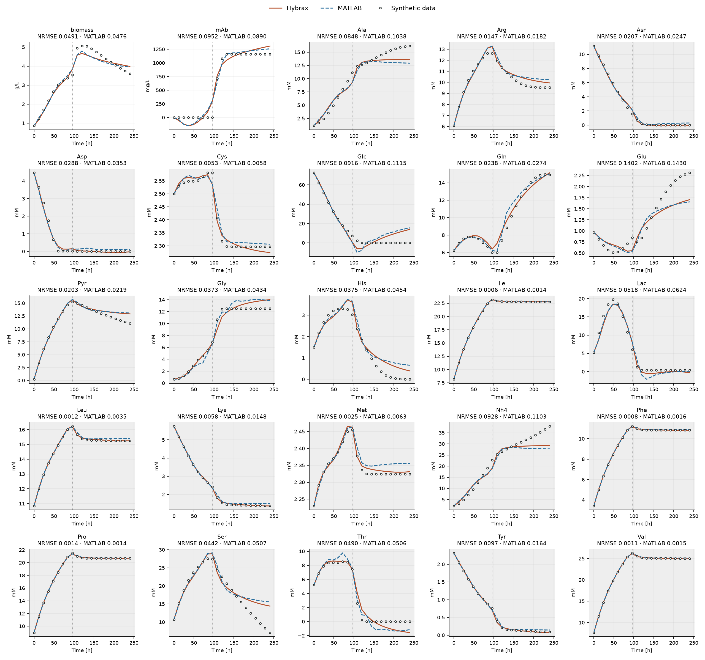

HEK293: PCA reaction modes with an LSTM¶
Mammalian process models often track many more extracellular states than microbial models, including amino acids and other metabolites. If a hybrid model’s neural network has to learn a specific rate for every one of these states, it becomes large and hard to train.
Ramos et al. [1] addressed this with a smart trick: they converted measured concentrations into cumulative reacted amounts, applied principal component analysis (PCA) across all cultures, and extracted a few of the most important principal components (which we will call “reaction modes” here). Each mode is a pattern of correlated net production and consumption. In their experimental study, seven modes captured more than 99% of the variation in the normalized cumulative reacted amounts of the 27 measured extracellular species. Therefore, instead of having the neural network predict 27 separate reaction rates (one for each state), it only needs to predict seven mode rates without substantially compromising the fit. A fixed matrix derived from the PCA loadings then maps these seven mode rates back onto the reaction terms for all 27 states.
The authors’ experimental measurements are not in their public repository, so this example uses the synthetic data they provide instead: nine HEK293 cultures with 25 extracellular states [2]. Here four PCA modes capture 99.66% of the normalized reacted-amount squared magnitude, so the ANN learns four rates that drive all 25 concentration balances.
This page is an illustrative example of how to implement a model similar to the authors’ in Hybrax. For the sake of simplicity, we do not reproduce their custom LSTM architecture exactly because this would increase the code complexity without adding much value for the reader. Instead, we build on Hybrax’s built-in LSTM reaction module. The two networks differ in some regards, but total parameter count and final accuracy are comparable to the authors’ saved MATLAB model.
How the pieces fit¶
This example follows the standard Hybrax pipeline. Each step has its own file
in examples/gallery_hek293_lstm/:
Note: If this is your first Hybrax model, work through the tutorials first; Tutorial 4 introduces
custom.py. Stateful models explains recurrent reaction modules in more depth.
Import (
import_from_mat.py; createsdata.json,train-config.json). The importer reads the authors’ MAT file and converts the nine cultures into a HybraxBioProcessCollectionwith concentrations, reactor volume, feed and feed composition. It computes the PCA reaction matrix and stores it in every process as aReactionOde. It also writes the training configuration, because the config carries statistics computed from all nine cultures (see Validate the data and train the model for why).Prepare (
prepare-config.json; createsprepared/prepared.json). Prepare supports data transformation and augmentation, but neither is required here. It also validates the collection, including the reaction equations and feed controls, and records preparation metadata before writing the training-ready artifact. Training reads this artifact (rather thandata.json).Train (
train-config.json,custom.py; createsrun/metrics.csv,run/losses.csv, model files inrun/model/, and checkpoints inrun/checkpoints/). The config points tocustom.py, and Hybrax looks up its hook functions by name. Here they build the LSTM reaction module, the input scaling, and a loss that uses the same max-normalized concentration errors as MATLAB. Training writes losses and checkpoints torun/. The config requests 20,000 epochs with validation every 10 epochs.Results (
plot_data.py,results.py; creates results CSVs and plot PNGs).plot_data.pyplots the source data before training.results.pyselects the checkpoint with the lowest validation loss and compares it with the authors’ saved MATLAB predictions.
The data therefore flow from source-data.mat through the importer to
data.json, through hybrax prepare to prepared/, and through
hybrax train to run/. The run.py script runs all four steps in order.
Import the synthetic cultures¶
The bundled
source-data.mat
holds the authors’ nine synthetic fed-batch cultures. Each one covers ten days
of biomass growth, mAb production, and 23 nutrient and metabolite
concentrations, sampled every 12 h. All cultures start at 0.27 L with the same
feed composition, but each receives a different feed profile.
The importer turns each culture into one Hybrax BioProcess, named Br1 to Br9
in file order. Each process gets one TimeSeries per state, the total reactor
volume, and a single feed. The feed is a controlled, continuous Inflow, which
means it is a known input rather than something the model predicts. Its
cumulative added volume is \(V(t) - V(0)\): the importer treats every volume
increase as feed and does not model sample removal (just like the authors’
MATLAB code). The feed composition comes from feed.json. The only unit conversion is
volume, from mL to L. Concentrations are used as they are.
processes = {}
for i, batch in enumerate(source, 1):
name = f"Br{i}"
# Convert mL to L; concentration values are already in the assigned units.
volume = batch.vol / 1000
processes[name] = hxf.BioProcess(
metadata=hxf.BioProcessMetadata(name=name, process_type="fed_batch"),
time_axis=hxf.TimeAxis(
unit="h",
start=float(times[0]),
end=float(times[-1]),
time_reference="inoculation",
),
reactor_medium=hxf.ReactorMedium(
name="HEK293_medium",
components={
state: hxf.ReactorMediumComponent(
name=state,
unit=unit,
concentration=hxf.TimeSeries(times=times, values=values),
)
for state, unit, values in zip(
state_names, units, batch.conc, strict=True
)
},
),
volume=hxf.Volume(
initial_volume=float(volume[0]),
unit="L",
total_volume=hxf.TimeSeries(times=times, values=volume),
volume_changes={
"feed": hxf.Inflow(
name="feed",
unit="L",
is_controlled=True,
is_continuous=True,
feed_medium=feed_medium,
# With no removals, added feed equals the volume increase.
values=hxf.TimeSeries(times=times, values=volume - volume[0]),
)
},
),
reaction_ode=reaction_ode,
# Linear cumulative-feed interpolation gives interval-constant rates.
# Tell the solver where those rates can jump.
discrete_events=hxf.DiscreteEvents(times=times[1:-1]),
)
collection = hxf.BioProcessCollection(
case_id="ramos_2024_synthetic_HEK293",
organism="HEK293 (synthetic)",
citation="Ramos et al. (2024), doi:10.1002/bit.28668; synthetic repository data",
processes=processes,
)
hxf.serialization.save_process_collection(collection, WORK / "data.json")
The save_process_collection call writes data.json, which stores the
measurements, units, time axes, feed definition, and reaction equations
together. Load it from Python with the same serialization API:
collection = hxf.serialization.load_process_collection(WORK / "data.json")
print(f"Loaded {len(collection.processes)} cultures: {', '.join(collection.processes)}")
Loaded 9 cultures: Br1, Br2, Br3, Br4, Br5, Br6, Br7, Br8, Br9
What the MAT file contains
The file holds one MATLAB struct per culture. All nine share the same time grid: 21 samples, every 12 h from 0 to 240 h. The importer uses four fields of each struct:
time: the 21 sample times in hours.conc: a 25×21 array of concentrations, one row per extracellular state.vol: the reactor volume in mL at each sample. Every culture starts at 270 mL, but the feed profiles differ, so final volumes range from about 0.46 L (Br7) to 4.9 L (Br8).m_r: a 25×21 array of cumulative reacted amounts, computed by the authors’ preprocessing. It is zero at 0 h. Only the PCA step uses these values.
The 25 states are biomass, the mAb product, glucose, pyruvate, lactate,
ammonium, and 19 amino acids. The importer renames only Xv to biomass,
which Hybrax validation requires, and keeps the other MAT-file identifiers,
such as mAb, Glc and Gln. It assigns g/L to biomass, mg/L to mAb, and mM
to the other 23 states. The struct also has fields the importer does not read
(accum, val, std and a batch ID).
Biomass: from cell counts to dry weight
Xv already contains dry-weight-equivalent viable biomass in g/L, and the
importer uses these values directly. The authors’ preprocessing derived them
from the workbook’s X column, the viable cell density in million cells/mL,
with an assumed dry mass per cell: 216.1 pg before 100 h and 287.496 pg from
100 h onward. This converts a cell count to a dry-weight concentration. It is
not a wet-to-dry biomass conversion.
Source files and provenance
The inputs come from the authors’ repository at a pinned commit [2]:
source-data.matisdata/data.matfrom that commit.feed.jsonis extracted from thesynthetic DoEsheet of the repository’s workbook.matlab-reference.npzholds the concentration predictions of the authors’ saved MATLAB model (hybrid_LSTM_1.mat). It contains no network weights, and training never reads it. The comparison plots and scores use it.provenance.jsonrecords the source commit, the file hashes, and the workbook cells behindfeed.json.
feed.json lists 25 feed concentrations in the same units as the reactor
states. Biomass, mAb, lactate, ammonium and several amino acids have a feed
concentration of zero. The importer checks that the feed names after biomass
match the MAT file’s state order.
{
"names": [
"X",
"mAb",
"Ala",
"Arg",
"Asn",
"Asp",
"Cys",
"Glc",
"Gln",
"Glu",
"Pyr",
"Gly",
"His",
"Ile",
"Lac",
"Leu",
"Lys",
"Met",
"Nh4",
"Phe",
"Pro",
"Ser",
"Thr",
"Tyr",
"Val"
],
"concentrations": [
0.0,
0.0,
0.0,
29.71,
0.0,
0.0,
3.32,
42.8,
23.53,
0.0,
39.67,
0.0,
11.73,
46.96,
0.0,
27.71,
1.02,
3.57,
0.0,
23.89,
41.31,
72.97,
32.12,
0.0,
56.21
]
}
Full importer: import_from_mat.py
"""Convert the pinned synthetic data into a Hybrax collection."""
import json
from pathlib import Path
import numpy as np
from scipy.io import loadmat
import hybrax.format as hxf
WORK = Path(__file__).resolve().parent
source = loadmat(WORK / "source-data.mat", squeeze_me=True, struct_as_record=False)[
"data"
]
state_names = source[0].names.tolist()
# Hybrax validation expects this component name; keep all other source IDs.
state_names[0] = "biomass"
units = ["g/L", "mg/L"] + ["mM"] * (len(state_names) - 2)
train_names = ("Br1", "Br2", "Br3", "Br4", "Br9")
times = source[0].time
assert len(source) == 9
assert all(np.array_equal(batch.time, times) for batch in source)
N_RATES = 4
# Stack all cultures: rows are measurement times, columns are the 25 states.
# m_r already contains cumulative reacted amounts, not concentrations.
reacted = np.concatenate([batch.m_r.T for batch in source])
# Normalize each column so states with larger amounts do not dominate PCA.
# Reacted amounts can be negative when a component is consumed.
amount_scale = np.abs(reacted).max(axis=0)
# No mean subtraction: this matches MATLAB's uncentered PCA via SVD.
# Rows of vt are principal directions; singular values rank their importance.
_, singular_values, vt = np.linalg.svd(reacted / amount_scale, full_matrices=False)
# Keep four directions as columns, then restore each state's amount scale.
# The resulting 25-by-4 matrix maps learned mode rates to reaction terms.
coefficients = vt[:N_RATES].T
reaction_matrix = amount_scale[:, None] * coefficients
# For uncentered PCA this fraction measures retained squared magnitude,
# rather than variance about the column means.
explained = np.sum(singular_values[:N_RATES] ** 2) / np.sum(singular_values**2)
print(
f"Four modes retain {explained:.2%} of normalized reacted-amount squared magnitude"
)
rate_names = [f"r_pc{i + 1}" for i in range(N_RATES)]
# Write one equation per state: biomass * sum(M[state, mode] * r_mode).
# The matrix is fixed; the reaction module learns only the four mode rates.
reaction_ode = hxf.ReactionOde(
rates=dict.fromkeys(rate_names),
derivatives={
name: f"{state_names[0]} * ("
+ " + ".join(
f"({coefficient:.16g}) * {rate}"
for coefficient, rate in zip(row, rate_names, strict=True)
)
+ ")"
for name, row in zip(state_names, reaction_matrix, strict=True)
},
)
# Feed formulation extracted from the pinned workbook; see provenance.json.
feed = json.loads((WORK / "feed.json").read_text())
assert feed["names"][1:] == source[0].names[1:].tolist()
feed_concentrations = feed["concentrations"]
feed_medium = hxf.FeedMedium(
name="HEK293_feed",
components={
name: hxf.FeedMediumComponent(
name=name, unit=unit, concentration=hxf.StaticVariable(float(value))
)
for name, unit, value in zip(
state_names, units, feed_concentrations, strict=True
)
},
)
processes = {}
for i, batch in enumerate(source, 1):
name = f"Br{i}"
# Convert mL to L; concentration values are already in the assigned units.
volume = batch.vol / 1000
processes[name] = hxf.BioProcess(
metadata=hxf.BioProcessMetadata(name=name, process_type="fed_batch"),
time_axis=hxf.TimeAxis(
unit="h",
start=float(times[0]),
end=float(times[-1]),
time_reference="inoculation",
),
reactor_medium=hxf.ReactorMedium(
name="HEK293_medium",
components={
state: hxf.ReactorMediumComponent(
name=state,
unit=unit,
concentration=hxf.TimeSeries(times=times, values=values),
)
for state, unit, values in zip(
state_names, units, batch.conc, strict=True
)
},
),
volume=hxf.Volume(
initial_volume=float(volume[0]),
unit="L",
total_volume=hxf.TimeSeries(times=times, values=volume),
volume_changes={
"feed": hxf.Inflow(
name="feed",
unit="L",
is_controlled=True,
is_continuous=True,
feed_medium=feed_medium,
# With no removals, added feed equals the volume increase.
values=hxf.TimeSeries(times=times, values=volume - volume[0]),
)
},
),
reaction_ode=reaction_ode,
# Linear cumulative-feed interpolation gives interval-constant rates.
# Tell the solver where those rates can jump.
discrete_events=hxf.DiscreteEvents(times=times[1:-1]),
)
collection = hxf.BioProcessCollection(
case_id="ramos_2024_synthetic_HEK293",
organism="HEK293 (synthetic)",
citation="Ramos et al. (2024), doi:10.1002/bit.28668; synthetic repository data",
processes=processes,
)
hxf.serialization.save_process_collection(collection, WORK / "data.json")
# Match MATLAB's use of all nine cultures for preprocessing. Concentrations
# and volume are kept in physical units here; time is in hours. The hooks use
# these means/sample SDs directly, without an intermediate max scaling.
# Loss normalization is separate from input z-scoring and reacted-amount PCA.
features = np.concatenate(
[np.column_stack([batch.conc.T, batch.vol / 1000, batch.time]) for batch in source]
)
config = {
"data": {"prepared": "prepared", "processes": list(train_names)},
"custom_py": "custom.py",
"train": {
"epochs": 20000,
"seed": 0,
"allow_stateful_models": True,
"learning_rate": 5e-5,
"devices": 1,
"holdout_processes": ["Br7"],
},
"checkpoint": {
"every": 10,
"keep_best": 20,
"select_by": "holdout_loss",
"bundle_prepared": False,
},
"output": {"dir": "run"},
"custom": {
"state_names": state_names,
"loss_maxima": np.concatenate([b.conc.T for b in source]).max(axis=0).tolist(),
"feature_center": features.mean(axis=0).tolist(),
"feature_spread": features.std(axis=0, ddof=1).tolist(),
},
}
(WORK / "train-config.json").write_text(json.dumps(config, indent=2) + "\n")
Train, validation and test cultures¶
The split follows the authors’ code:
Role |
Cultures |
Used for |
|---|---|---|
Training |
Br1, Br2, Br3, Br4, Br9 |
gradient updates |
Validation |
Br7 |
checkpoint selection |
Test |
Br5, Br6, Br8 |
final comparison only |
All nine cultures go into data.json. The split lives in the training
configuration: data.processes lists the training cultures and
train.holdout_processes names Br7. This makes Hybrax simulate Br7 with the
current model and evaluate the same loss used for training at each checkpoint
boundary. Br7 is not used for gradient updates. Here checkpoint.every=10 means
this happens every 10 epochs. With checkpoint.select_by="holdout_loss" and
checkpoint.keep_best=20, Hybrax retains the 20 checkpoints with the lowest Br7
losses, plus the final checkpoint.
The test cultures appear in neither list, so Hybrax never fits or validates on their trajectories. The one place they enter is the preprocessing statistics, discussed in Validate the data and train the model.
Inspect the culture trajectories¶
The overview shows biomass, product, glucose and glutamine alongside reactor volume and feed rate. The lines connect the 21 data points of each culture; they are not model predictions. The feed rate is \(\Delta V / \Delta t\) for each 12-hour interval, plotted as steps to match the piecewise-linear cumulative feed that Hybrax uses. Black-to-grey shades mark training cultures, orange marks Br7, and red-to-pink shades mark test cultures. Within each set, shades and line patterns identify the same culture in both figures.

Br7 ends with a smaller volume than the training cultures. Its feed stops at 96 h on this measurement grid, while several other cultures keep receiving feed. A concentration can change through reactions or through dilution, so the model needs the feed history as well as the concentrations.
All 25 extracellular states across the nine cultures

The model¶
Hybrax splits each state’s derivative into a reaction part and a transport part. Users declare the reaction part and Hybrax handles the transport part (i.e. it generates feed and dilution from the volume description). In this example the reaction part is biomass concentration times the PCA reaction matrix and the four learned mode rates predicted by the ANN.
Map four learned rates to 25 balances¶
The importer builds the reaction matrix from the reacted amounts m_r in the
MAT file, so the authors’ preprocessing carries over unchanged. It divides each
reacted-amount column by its maximum absolute value and computes an uncentered
singular-value decomposition. Multiplying the first four loadings by those
maxima gives the fixed reaction matrix:
N_RATES = 4
# Stack all cultures: rows are measurement times, columns are the 25 states.
# m_r already contains cumulative reacted amounts, not concentrations.
reacted = np.concatenate([batch.m_r.T for batch in source])
# Normalize each column so states with larger amounts do not dominate PCA.
# Reacted amounts can be negative when a component is consumed.
amount_scale = np.abs(reacted).max(axis=0)
# No mean subtraction: this matches MATLAB's uncentered PCA via SVD.
# Rows of vt are principal directions; singular values rank their importance.
_, singular_values, vt = np.linalg.svd(reacted / amount_scale, full_matrices=False)
# Keep four directions as columns, then restore each state's amount scale.
# The resulting 25-by-4 matrix maps learned mode rates to reaction terms.
coefficients = vt[:N_RATES].T
reaction_matrix = amount_scale[:, None] * coefficients
How does the PCA reaction matrix work?
Start with reaction amounts, not raw concentrations. A concentration
can fall because cells consume a compound or because feed dilutes it. The source
preprocessing multiplies concentrations by reactor volume, subtracts initial and
fed amounts, and accounts for removed material. The resulting m_r describes
the cumulative amount produced or consumed by reactions. Our importer reads
these precomputed values from the MAT file.
Find a few shared reaction patterns. Stack measurement times from all nine
cultures into one matrix, with 25 columns for the extracellular states. Scale each
column by its maximum absolute reacted amount, then apply an uncentered SVD.
The first four directions describe patterns of production and consumption that
occur together. Restoring the column scales gives the fixed 25×4 matrix M.
Its columns carry the corresponding amount units; they are not dimensionless
stoichiometric coefficients.
Use the same patterns in concentration balances. If cumulative reaction
amounts are approximated by A(t) ≈ M z(t), their instantaneous rates are
approximated by dA/dt ≈ M dz/dt, because M is fixed. Dividing every component
by the same reactor volume changes the magnitude, but preserves these four
directions. The LSTM learns four instantaneous, biomass-specific coefficients
r, giving the concentration reaction term X M r, where X is biomass
concentration. It does not predict the cumulative PCA scores z.
Hybrax integrates concentrations and adds feed and dilution separately.
Keep the approximation limits in mind. The four directions capture 99.66% of the normalized cumulative-amount squared magnitude. This does not guarantee equally accurate instantaneous reaction rates.
The network learns the rates of these four modes, while the PCA matrix stays fixed. For concentration vector \(C\), biomass \(X\), reaction matrix \(M\), and four learned rates \(r\), the reaction contribution is
The reacted amounts m_r only shape M. Training never uses them, or any
rates derived from them, as targets: the loss compares simulated and measured
concentrations directly. Hybrax does this out of the box, so we do not have
to estimate rates from the data before training.
Declare the balances as a ReactionOde¶
A ReactionOde declares named rates and the reaction part of each state’s
derivative as an expression in those rates and the states. The importer writes
one expression per state, biomass * (M[state, 0] * r_pc1 + ... ), and
attaches the same ReactionOde to every culture:
rate_names = [f"r_pc{i + 1}" for i in range(N_RATES)]
# Write one equation per state: biomass * sum(M[state, mode] * r_mode).
# The matrix is fixed; the reaction module learns only the four mode rates.
reaction_ode = hxf.ReactionOde(
rates=dict.fromkeys(rate_names),
derivatives={
name: f"{state_names[0]} * ("
+ " + ".join(
f"({coefficient:.16g}) * {rate}"
for coefficient, rate in zip(row, rate_names, strict=True)
)
+ ")"
for name, row in zip(state_names, reaction_matrix, strict=True)
},
)
# Feed formulation extracted from the pinned workbook; see provenance.json.
The rates have no bounds. The reaction module defined in custom.py must
return four values, one per name in rates. Expand the output below to see the
rate declarations and all 25 equations:
pprint(reaction_ode)
Note
You might have noticed that all four coefficients in the mAb equation are negative. This is OK here: the network predicts signed mode rates, so a negative coefficient times a negative rate produces mAb. The sign of each PCA mode is arbitrary, and only the sum over all four modes sets the net reaction term.
Feed, dilution and discrete events¶
The ReactionOde contains no feed terms. Hybrax adds feed and dilution from
the controlled feed inflow, its feed medium, and the reactor volume.
In this synthetic dataset, the reactor volume is only known on the 12-hour grid.
Linear interpolation of the cumulative feed gives a constant feed rate within
each interval, and that rate can jump at every interior sample time. The
importer declares the 19 times from 12 to 228 h as DiscreteEvents. Hybrax
passes them to the solver’s step-size controller, so the solver steps exactly
onto each jump instead of smoothing over it.
Network, scaling and loss¶
train-config.json sets custom_py to custom.py. Hybrax imports that file
and looks up hook functions by their names; any hook we do not define keeps
its default. This example defines three:
build_reaction_modulebuilds the LSTM that predicts the four mode rates.estimate_all_scalessets how states are standardized.build_loss_moduledefines the training and validation loss.
For more details, the Customization docs list all hooks and their signatures.
The LSTM as extra ODE states¶
An LSTM is a discrete recurrence. Each step takes the current inputs plus a
hidden state \(h\) and a cell state \(c\), and returns updated states. A Hybrax
model is an ODE, so the built-in DefaultLstmReactionModule turns the
recurrence into extra ODE states. With four hidden units, \(h\) and \(c\) add eight
latent states, which start at zero and are integrated alongside the 25
concentrations. Their derivative is next_state - current_state, the
difference between what the LSTM cell would return and the current state.
They follow the cell’s update continuously, rather than once per 12-hour
interval as in Ramos et al.’s MATLAB code.
Latent states give the model memory of the path the culture has taken. Hybrax
rejects a reaction module with latent states unless train.allow_stateful_models
is true, and the generated config sets it.
InputLstm subclasses DefaultLstmReactionModule with hidden_width=4 and
changes its inputs. For this dataset, the default cell reads 28 inputs: the
25 concentrations, volume, cumulative feed and feed rate. The MATLAB network
reads the 25 concentrations, volume and time instead. Setting input_size=27
lets the built-in constructor initialize the cell. The subclass replaces the
default output head with a 4-to-4 linear layer that reads only the hidden
state. It retains the default head’s hidden-state weight columns and biases.
After construction, the hook multiplies the LSTM input weights, recurrent
weights and head weights by 0.1, leaving biases unchanged. The model has 532
trainable parameters.
The input_features override assembles those 27 standardized features:
def input_features(self, t, inputs):
"""Concentrations and volume arrive z-scored; standardize time here."""
return jnp.concatenate(
[
inputs.SCL_modeled_RMCs,
jnp.atleast_1d(inputs.SCL_modeled_V),
jnp.atleast_1d((t - self.time_center) / self.time_spread),
]
)
The custom forward pass supplies these features to the LSTM cell. Only the current four-dimensional hidden state goes to the linear head, which predicts the four signed mode rates. Hidden and cell states evolve continuously with derivatives equal to the LSTM update minus the current state:
def __call__(self, t, inputs):
features = self.input_features(t, inputs)
h, c = jnp.split(inputs.SCL_latent, 2)
h_new, c_new = self.lstm_cell(features, (h, c))
h_diff = h_new - h
c_diff = c_new - c
rates = self.rate_head(h)
return ReactionOutputs(
SCL_modeled_ReactionOde_rates=rates,
SCL_modeled_Inflows_rates=jnp.zeros(0),
SCL_modeled_Outflows_rates=jnp.zeros(0),
SCL_latent_derivative=jnp.concatenate([h_diff, c_diff]),
)
The model has no other layers, dropout, data augmentation or learning-rate schedule.
How the Hybrax model differs from MATLAB
Recurrent cell. MATLAB uses a custom LSTM cell, updated once per 12-hour interval. Hybrax uses a standard LSTM cell whose states follow the update continuously inside the ODE.
Output head. Hybrax maps its four hidden-state values to four mode rates with a learned linear layer. MATLAB uses its custom recurrent-cell output directly as the mode rates.
Input normalization. Both use the means and SDs of all nine cultures. In the authors’ simulation code (
hybnet/hnetsimul.m), the concentration input is written aspredc(t-1,:)-data.xmean./(data.xstd). MATLAB’s operator precedence evaluates this as \(x - (\mathrm{mean}/\mathrm{SD})\). Hybrax uses the z-score \((x - \mathrm{mean})/\mathrm{SD}\).Optimization. The two models differ in initialization, gradients and optimizer settings, so similar scores do not imply similar learned rates.
One scaling for the solver and the network¶
Hybrax solves the ODE in scaled units, so that the solver sees values of
similar size (see Scaling). The estimate_all_scales
hook chooses the transformation for each kind of quantity. Here it returns an
AffineScaler for the 25 concentrations and for the reactor volume. An
AffineScaler(scale, offset) maps a physical value \(x\) to
\((x - \mathrm{offset}) / \mathrm{scale}\). With the mean as offset and the
sample standard deviation (SD) as scale, every state becomes a z-score:
return EstimatedScales(
# Reorder concentration statistics to the ODE's species order.
SCALE_modeled_RMCs=AffineScaler(
spread[jnp.array(order)], center[jnp.array(order)]
),
# This axis scales total reactor volume.
SCALE_V_in_cumulative=AffineScaler(spread[25], center[25]),
This one choice does two jobs. Hybrax integrates the ODE in these z-score
coordinates, which keeps the solver well conditioned. It also hands the same
scaled values to the reaction module as inputs.SCL_modeled_RMCs and
inputs.SCL_modeled_V, so the ANN inputs arrive standardized without any extra
code. Time is not a state, so we have to standardize it ourselves in
input_features. The means and SDs come from the custom block of the config,
and the hook reorders them by name to match the ODE’s species order. All other
scales are ones or empty arrays: the four mode rates and the feed keep their
physical units, and the model has no other inputs.
MATLAB-normalized concentration errors¶
The default loss compares simulated and measured states in the scaled units above, so its residuals are differences of z-scores. The original MATLAB code instead divides each physical residual by that state’s maximum concentration across all nine cultures, which we will reproduce here.
Recall that the mean cancels when two z-scores are subtracted and multiplying
the result by SD / maximum therefore gives the physical residual divided by
the maximum:
class MatlabLoss(DefaultLossModule):
"""Convert z-score residuals to MATLAB's max-normalized residuals.
The mean cancels in predicted minus measured z-scores. Multiplying by
sample_SD / all_nine_max therefore gives the physical residual divided by
all_nine_max. The default reduction squares and averages these residuals.
"""
ratio: jax.Array = frozen_field()
def __init__(self, target_names, ratio):
super().__init__(target_names=target_names)
self.ratio = ratio
def residual_reduction(self, residual, mask):
# t=0 prescribes the initial condition. Exclude it from the loss while
# retaining later measurements that happen to have concentration zero.
return super().residual_reduction(residual * self.ratio, mask.at[0].set(False))
def build_loss_module(*, target_names, config, **kwargs):
"""Loss-construction hook, called by Hybrax during model setup."""
# Ratios are stored in source-species order, so check the target order.
assert list(target_names) == config.custom.state_names
ratio = jnp.asarray(config.custom.feature_spread[:25]) / jnp.asarray(
config.custom.loss_maxima
)
return MatlabLoss(target_names, ratio)
The loss excludes the first measurement, which prescribes the initial condition. The normalized mean squared error (NMSE) averages the squared normalized residuals over all 25 states and the 20 post-initial measurements. Every state has equal weight. NRMSE is its square root. Training, Br7 checkpoint selection and the reported comparisons all use this normalization.
There is no penalty for negative concentrations. Predictions can become negative, as can the authors’ saved MATLAB predictions. The fixed PCA reaction modes do not enforce positivity.
Complete custom.py
"""Use a native LSTM with z-scored inputs and MATLAB's max-normalized loss.
Hybrax discovers the three hooks below through ``custom_py`` in the config.
At model setup they construct fixed scalers, the reaction module and the loss.
Concentrations and volume are z-scored by the framework; time is z-scored in
input_features. All means and sample SDs use all nine cultures, matching MATLAB's
choice of cultures, but with the correct (value - mean) / SD calculation.
Loss normalization is separate: physical residuals / all-nine concentration
maxima. The converter also independently max-normalizes reacted amounts for PCA.
"""
import equinox as eqx
import jax
import jax.numpy as jnp
from hybrax.train import (
AffineScaler,
DefaultLossModule,
DefaultLstmReactionModule,
EstimatedScales,
ReactionOutputs,
frozen_field,
)
class InputLstm(DefaultLstmReactionModule):
"""Native four-unit cell with 25 concentrations, volume and time as inputs."""
time_center: jax.Array = frozen_field()
time_spread: jax.Array = frozen_field()
def __init__(self, *, key, config, **scales):
super().__init__(key=key, hidden_width=4, input_size=27, **scales)
# Retain the default head's hidden-state columns and initial biases,
# but omit its direct concentration, volume and time inputs.
self.rate_head = eqx.tree_at(
lambda head: (head.weight, head.bias),
eqx.nn.Linear(4, 4, key=key),
(self.rate_head.weight[:, :4], self.rate_head.bias),
)
self.time_center = jnp.asarray(config.custom.feature_center[-1])
self.time_spread = jnp.asarray(config.custom.feature_spread[-1])
def input_features(self, t, inputs):
"""Concentrations and volume arrive z-scored; standardize time here."""
return jnp.concatenate(
[
inputs.SCL_modeled_RMCs,
jnp.atleast_1d(inputs.SCL_modeled_V),
jnp.atleast_1d((t - self.time_center) / self.time_spread),
]
)
def __call__(self, t, inputs):
features = self.input_features(t, inputs)
h, c = jnp.split(inputs.SCL_latent, 2)
h_new, c_new = self.lstm_cell(features, (h, c))
h_diff = h_new - h
c_diff = c_new - c
rates = self.rate_head(h)
return ReactionOutputs(
SCL_modeled_ReactionOde_rates=rates,
SCL_modeled_Inflows_rates=jnp.zeros(0),
SCL_modeled_Outflows_rates=jnp.zeros(0),
SCL_latent_derivative=jnp.concatenate([h_diff, c_diff]),
)
def build_reaction_module(*, seed, config, **kwargs):
"""Construct the model, then shrink its three weight matrices by 0.1.
Biases and preprocessing statistics remain unchanged. The LSTM cell uses
Hybrax's native initialization before this adjustment.
"""
scales = {k: v for k, v in kwargs.items() if k.startswith("SCALE_")}
module = InputLstm(key=jax.random.key(seed), config=config, **scales)
return eqx.tree_at(
lambda m: (
m.lstm_cell.weight_ih,
m.lstm_cell.weight_hh,
m.rate_head.weight,
),
module,
replace_fn=lambda weight: 0.1 * weight,
)
def estimate_all_scales(runtime_data, target_names, config):
"""Supply fixed physical-to-solver transformations during model setup.
runtime_data contains training parents, but this benchmark deliberately
uses the all-nine statistics saved by the converter, including held-out
cultures. Best practice would be to fit preprocessing on training cultures only.
AffineScaler computes SCL = (physical - mean) / sample_SD. Hybrax also
uses these coordinates for ODE integration and restores physical values
before evaluating the balances. Derivatives are divided by SD without
subtracting the mean. Predictions are converted back to physical units.
Bare arrays mean division. Ones retain physical units; empty arrays mean
that no variables exist on that axis. Their shapes define module widths.
Scales remain fixed throughout training and prediction.
"""
del target_names
rhs = runtime_data.rhs_ode
order = [config.custom.state_names.index(n) for n in rhs.name_modeled_RMCs]
center = jnp.asarray(config.custom.feature_center)
spread = jnp.asarray(config.custom.feature_spread)
empty = jnp.zeros(0)
return EstimatedScales(
# Reorder concentration statistics to the ODE's species order.
SCALE_modeled_RMCs=AffineScaler(
spread[jnp.array(order)], center[jnp.array(order)]
),
# This axis scales total reactor volume.
SCALE_V_in_cumulative=AffineScaler(spread[25], center[25]),
# Four learned PCA-mode rates. Unit scales mean the rate head's
# outputs need no further unit conversion before entering X * M * r.
SCALE_modeled_ReactionOde_rates=jnp.ones(4),
# No ANN-predicted inflows: neither cumulative volumes nor flow rates.
SCALE_modeled_Inflows_cumulative=empty,
SCALE_modeled_Inflows_rates=empty,
# No ANN-predicted outflows either.
SCALE_modeled_Outflows_cumulative=empty,
SCALE_modeled_Outflows_rates=empty,
# One known (controlled) feed. Keep cumulative volume in L and feed
# rate in L/h. These signals drive the physical feed/dilution terms;
# this example's 27 ANN features do not include them explicitly.
SCALE_controlled_Inflows_cumulative=jnp.ones(1),
SCALE_controlled_Inflows_rates=jnp.ones(1),
# No controlled outflow signals.
SCALE_controlled_Outflows_cumulative=empty,
SCALE_controlled_Outflows_rates=empty,
# No extra controlled process variables, such as pH or temperature.
SCALE_controlled_PVs=empty,
# Known feed-composition matrix: retain each component's concentration
# units. This is distinct from scaling reactor concentrations above.
SCALE_controlled_Inflows_Cin=jnp.ones_like(rhs.Cin_controlled_Inflows),
# No predicted inflows, so their composition matrix has no feed entries.
SCALE_modeled_Inflows_Cin=jnp.ones_like(rhs.Cin_modeled_Inflows),
)
class MatlabLoss(DefaultLossModule):
"""Convert z-score residuals to MATLAB's max-normalized residuals.
The mean cancels in predicted minus measured z-scores. Multiplying by
sample_SD / all_nine_max therefore gives the physical residual divided by
all_nine_max. The default reduction squares and averages these residuals.
"""
ratio: jax.Array = frozen_field()
def __init__(self, target_names, ratio):
super().__init__(target_names=target_names)
self.ratio = ratio
def residual_reduction(self, residual, mask):
# t=0 prescribes the initial condition. Exclude it from the loss while
# retaining later measurements that happen to have concentration zero.
return super().residual_reduction(residual * self.ratio, mask.at[0].set(False))
def build_loss_module(*, target_names, config, **kwargs):
"""Loss-construction hook, called by Hybrax during model setup."""
# Ratios are stored in source-species order, so check the target order.
assert list(target_names) == config.custom.state_names
ratio = jnp.asarray(config.custom.feature_spread[:25]) / jnp.asarray(
config.custom.loss_maxima
)
return MatlabLoss(target_names, ratio)
Validate the data and train the model¶
Before training, we run hybrax prepare to validate the imported data and create
a training-ready artifact. This step takes a separate configuration file. Here,
prepare-config.json tells Hybrax to read data.json, apply strict format
validation,[1] and write the prepared artifact to prepared/:
{
"prepare": {
"raw_input": "data.json",
"strict_format_validation": true,
"diagnostics": false
},
"output": {
"dir": "prepared"
}
}
The importer generates train-config.json. This includes the training and
validation culture selections, training settings, checkpoint retention settings,
and the path to custom.py. Its custom block also
contains the means and sample standard deviations of the 27 network inputs (25
concentrations, reactor volume, and time), and the maximum of each
concentration. Means and standard deviations are used to z-score the ANN inputs;
the concentration and volume scales also define the coordinates used by the ODE
solver. The concentration maxima are required to reproduce MATLAB’s loss
normalization, which divides each physical concentration residual by its maximum
rather than its standard deviation. Following the original MATLAB
implementation, the importer also computes these statistics from all nine
cultures (even though this constitutes data leakage; best practice would be to
fit PCA and all other preprocessing on the training cultures only).
{
"data": {
"prepared": "prepared",
"processes": [
"Br1",
"Br2",
"Br3",
"Br4",
"Br9"
]
},
"custom_py": "custom.py",
"train": {
"epochs": 20000,
"seed": 0,
"allow_stateful_models": true,
"learning_rate": 5e-05,
"devices": 1,
"holdout_processes": [
"Br7"
]
},
"checkpoint": {
"every": 10,
"keep_best": 20,
"select_by": "holdout_loss",
"bundle_prepared": false
},
"output": {
"dir": "run"
},
"custom": {
"state_names": [
"biomass",
"mAb",
"Ala",
"Arg",
"Asn",
"Asp",
"Cys",
"Glc",
"Gln",
"Glu",
"Pyr",
"Gly",
"His",
"Ile",
"Lac",
"Leu",
"Lys",
"Met",
"Nh4",
"Phe",
"Pro",
"Ser",
"Thr",
"Tyr",
"Val"
],
"loss_maxima": [
5.21445557331635,
1179.38966041748,
16.1602289572824,
27.3813296995197,
11.17,
4.47,
3.22863258100961,
72.55,
21.0116797837439,
2.31087496800052,
36.9583079000846,
22.631852151351,
10.1916087055865,
44.7096079970333,
22.357785865404,
26.5585448087964,
5.75,
3.45348534411282,
37.9400363489689,
22.6789078204044,
39.4042042335139,
66.6189547881316,
18.011414550999,
2.32,
53.3282058198631
],
"feature_center": [
2.1755817144879117,
247.66851587719864,
6.133281287396075,
16.486429293256684,
2.7242033364208313,
0.644971699520635,
2.744377868253384,
17.92148932404266,
12.730962968618943,
0.7183851454635616,
20.041820516699822,
9.743899529120547,
5.120674963482491,
28.039030347740912,
6.0943325429361215,
18.765131993274046,
2.3827620356319112,
2.746561874222684,
12.754639809862041,
13.805874695332289,
25.44267191816807,
37.031882468727616,
8.40660124965238,
0.6825649939128455,
32.295136079295716,
1.1307211013738065,
120.0
],
"feature_spread": [
1.2126499364344352,
336.42835162126914,
3.473641406302876,
7.292554997782808,
3.724128429473591,
1.3226124302502722,
0.29700434702243933,
21.562399466746417,
5.820821635473293,
0.3653851969523295,
12.212883087369795,
6.979318744686835,
3.1570182351444274,
12.241813146917028,
7.269088100888048,
5.41995217239382,
1.5364840351189402,
0.4617195702237377,
7.454918974555025,
6.468206514393829,
10.176255385592503,
19.657027549968046,
4.9659732189897445,
0.7808733401408916,
15.303074958382954,
1.0757387263020903,
72.8566064704017
]
}
}
The rest of the config sets up the run. Training uses the five training cultures
in every update for 20,000 epochs, with seed 0 and Adam at a constant learning
rate of 5e-5. Hybrax evaluates Br7 at every checkpoint, which here means every
10 epochs. It keeps the 20 checkpoints with the lowest Br7 losses plus the final
one, and does not copy the prepared data into each checkpoint [2].
The test cultures are not part of training at all.
To run the steps yourself, switch to the example directory, regenerate the dataset and config, prepare, and train:
cd examples/gallery_hek293_lstm
python import_from_mat.py
hybrax prepare --config prepare-config.json
hybrax train --config train-config.json
Run directory: ../_data/out/runs/gallery_hek293_lstm/run
Loss curves¶
curves = evaluate_checkpoints(WORK)
plot_loss_curves(WORK, curves)
display(Image(filename=str(WORK / "loss-curves.png")))

The curves show training and Br7 NMSE on a logarithmic axis. Dashed lines show the authors’ saved MATLAB model, scored the same way. Training loss is recorded before each update and Br7 loss after it. The marker shows the lowest Br7 loss, which selects the checkpoint. The selected minimum is near the end of the 20,000-epoch run.
Compare with MATLAB¶
The selected Hybrax checkpoint is comparable to the authors’ saved MATLAB model, using a four-unit LSTM and a small linear output head:
selected_epoch = select_checkpoint(WORK, curves)
comparison = score_selected_checkpoint(WORK, selected_epoch)
display(comparison.style.set_uuid("hek_comparison").format("{:.5f}"))
| Hybrax | MATLAB | |
|---|---|---|
| Training | 0.03095 | 0.03256 |
| Validation (Br7) | 0.05207 | 0.05761 |
| Test | 0.03492 | 0.03757 |
How the test scores are calculated
After selecting the checkpoint using Br7, score_selected_checkpoint reloads
that model and simulates the training and test cultures with its parameters
and normalization fixed. It reuses the checkpoint’s saved Br7 predictions.
The test NRMSE pools squared, max-normalized concentration errors across all
25 states and all three test cultures before taking the square root, excluding
the initial condition. The function writes all three splits’ scores for Hybrax
and MATLAB to comparison-scores.csv:
def score_selected_checkpoint(work, epoch):
"""Score all splits, reusing Br7 predictions and simulating the other cultures.
The checkpoint has already been selected using Br7. Model parameters and
normalization remain fixed during these forward simulations. Pool squared
normalized errors before taking the root, excluding the initial condition.
"""
work = Path(work)
source, reference, maxima = load_benchmark(work)
wrapper, config = hxt.model_load(work / f"run/checkpoints/step_{epoch:05d}")
names = config.custom.state_names
columns = [wrapper.modeled_RMC_names.index(name) for name in names]
groups = {
"Training": ("Br1", "Br2", "Br3", "Br4", "Br9"),
"Validation (Br7)": ("Br7",),
"Test": ("Br5", "Br6", "Br8"),
}
collection = hxf.serialization.load_process_collection(
work / "prepared/prepared.json"
)
predictions = hxt.model_predict(
wrapper,
config,
collection,
process_names=groups["Training"] + groups["Test"],
grid_n=21,
)
saved_br7 = pd.read_csv(
work / f"run/checkpoints/step_{epoch:05d}/holdout_predictions.csv"
)
assert set(saved_br7.process) == {"Br7"}
errors = {"Hybrax": {}, "MATLAB": {}}
for index, batch in enumerate(source):
name = f"Br{index + 1}"
if name == "Br7":
np.testing.assert_array_equal(saved_br7.t, batch.time)
assert saved_br7.prediction_valid.all()
values = saved_br7[[f"c_{state}" for state in names]].to_numpy()
else:
prediction = predictions[name]
rows = np.searchsorted(prediction.t, batch.time)
np.testing.assert_array_equal(prediction.t[rows], batch.time)
assert prediction.prediction_valid[rows].all(), name
values = prediction.c_species[rows][:, columns]
assert np.isfinite(values).all(), name
errors["Hybrax"][name] = ((values - batch.conc.T) / maxima)[1:] ** 2
errors["MATLAB"][name] = ((reference[index] - batch.conc.T) / maxima)[1:] ** 2
scores = pd.DataFrame(
{
model: {
group: np.sqrt(np.stack([squared[name] for name in cultures]).mean())
for group, cultures in groups.items()
}
for model, squared in errors.items()
}
)
scores.to_csv(work / "comparison-scores.csv")
return scores
Both models are scored with the NRMSE defined above, on the same measurement times. Checkpoint selection follows MATLAB’s criterion: the lowest Br7 NMSE. For Hybrax, this selects epoch 19,970. The code below calculates validation NRMSE from the selected checkpoint’s saved Br7 predictions, avoiding an additional simulation. The test scores come from simulating the selected checkpoint on the three test cultures. Both the Hybrax and MATLAB checkpoints are selected using Br7, so their validation scores reflect model selection rather than an independent test.
All 25 states on Br7¶
selected_epoch = select_checkpoint(WORK, curves)
scores = plot_trajectories(WORK, selected_epoch)
print(f"Checkpoint: epoch {selected_epoch:,}")
display(scores[["All 25"]].style.set_uuid("hek_scores").format("{:.5f}"))
display(Image(filename=str(WORK / "Br7-trajectories.png")))
Checkpoint: epoch 19,970
| All 25 | |
|---|---|
| Hybrax | 0.05207 |
| MATLAB | 0.05761 |

Each panel compares one state on Br7, and its title gives both NRMSE values. A grey background means Hybrax has the lower NRMSE for that state; white means MATLAB’s is lower or equal. Open circles are synthetic measurements, solid lines are Hybrax predictions, and dashed lines are the authors’ saved MATLAB predictions. Both lines connect predictions at the 21 measurement times. The vertical dotted line marks the end of feeding at 96 h.
The two models fit individual states differently even though their aggregate errors are close. Neither model constrains concentrations to stay non-negative, so both can predict negative values.
Run the example locally¶
From examples/gallery_hek293_lstm/, run the whole pipeline with:
python run.py
The script regenerates data.json and train-config.json, plots the source
data, prepares the collection, trains the model, and runs results.py. It
replaces any existing prepared/ and run/. It writes loss-curves.csv,
loss-curves.png, selected-checkpoint.txt, comparison-scores.csv,
Br7-scores.csv, and Br7-trajectories.png to the example directory. Everything
runs from the bundled inputs, without MATLAB or network access. This page’s
executed run is in docs/source/_data/out/runs/gallery_hek293_lstm/run/.
run.py
"""Build, train and plot the synthetic HEK293 literature-model example."""
import os
import subprocess
import sys
from pathlib import Path
HERE = Path(__file__).resolve().parent
ENV = os.environ | {
"JAX_PLATFORMS": "cpu",
"JAX_ENABLE_X64": "1",
"HYBRAX_TRAIN_DEVICES": "1",
"MPLBACKEND": "Agg",
}
if __name__ == "__main__":
commands = [
[sys.executable, "import_from_mat.py"],
[sys.executable, "plot_data.py"],
[
sys.executable,
"-m",
"hybrax.train.cli",
"prepare",
"--config",
"prepare-config.json",
"--overwrite",
],
[
sys.executable,
"-m",
"hybrax.train.cli",
"train",
"--config",
"train-config.json",
"--overwrite",
],
[sys.executable, "results.py"],
]
for command in commands:
subprocess.run(command, cwd=HERE, env=ENV, check=True)
Plot the source data: plot_data.py
"""Plot the nine synthetic cultures in physical units, before model fitting."""
from pathlib import Path
import matplotlib.pyplot as plt
import numpy as np
from scipy.io import loadmat
def plot_data(work):
"""Write a process overview and all 25 concentration trajectories."""
work = Path(work)
source = loadmat(work / "source-data.mat", squeeze_me=True, struct_as_record=False)[
"data"
]
names = source[0].names.tolist()
# Split determines the color family; shade and pattern identify each culture.
styles = {
1: ("train", "#111111", "-"),
2: ("train", "#383838", "--"),
3: ("train", "#606060", "-."),
4: ("train", "#858585", ":"),
9: ("train", "#aaaaaa", (0, (5, 1, 1, 1, 1, 1))),
7: ("validation", "#d55e00", "-"),
5: ("test", "#b2182b", "-"),
6: ("test", "#df536b", "--"),
8: ("test", "#ef94ad", "-."),
}
labels = {"Xv": "Biomass", "mAb": "mAb", "Glc": "Glucose", "Gln": "Glutamine"}
def draw(axis, values, title, unit, *, intervals=False):
for i, (batch, y) in enumerate(zip(source, values, strict=True), 1):
role, color, style = styles[i]
line_style = {
"linestyle": style,
"linewidth": 1.2,
"color": color,
"label": f"Br{i} ({role})",
}
if intervals:
axis.stairs(y, batch.time, baseline=None, **line_style)
else:
axis.plot(batch.time, y, marker="o", markersize=2, **line_style)
axis.set(title=title, xlabel="Time [h]", ylabel=unit, xlim=(0, 240))
axis.grid(alpha=0.2)
axis.spines[["top", "right"]].set_visible(False)
def save(figure, axes, filename):
handles, legend = axes.flat[0].get_legend_handles_labels()
figure.legend(handles, legend, loc="upper center", ncol=3, frameon=False)
figure.tight_layout(rect=(0, 0, 1, 0.91))
figure.savefig(work / filename, dpi=160, facecolor="white")
plt.close(figure)
figure, axes = plt.subplots(2, 3, figsize=(13, 8))
for axis, name in zip(axes.flat, ("Xv", "mAb", "Glc", "Gln")):
column = names.index(name)
unit = "g/L" if column == 0 else "mg/L" if column == 1 else "mM"
draw(axis, [b.conc[column] for b in source], labels[name], unit)
draw(axes[1, 1], [b.vol / 1000 for b in source], "Reactor volume", "L")
draw(
axes[1, 2],
[np.diff(b.vol) / 1000 / np.diff(b.time) for b in source],
"Feed rate",
"L/h",
intervals=True,
)
save(figure, axes, "synthetic-overview.png")
figure, axes = plt.subplots(5, 5, figsize=(15, 15))
for column, (axis, name) in enumerate(zip(axes.flat, names, strict=True)):
unit = "g/L" if column == 0 else "mg/L" if column == 1 else "mM"
draw(axis, [b.conc[column] for b in source], labels.get(name, name), unit)
axis.tick_params(labelsize=8)
save(figure, axes, "synthetic-all-states.png")
if __name__ == "__main__":
plot_data(Path(__file__).resolve().parent)
Checkpoint selection, scoring and plotting: results.py
"""Select by Br7 all-state loss and compare all 25 synthetic benchmark states."""
import json
from pathlib import Path
import matplotlib.pyplot as plt
import numpy as np
import pandas as pd
from scipy.io import loadmat
import hybrax.format as hxf
import hybrax.train as hxt
def load_benchmark(work):
"""Load measurements and the authors' saved predictions in source order."""
work = Path(work)
source = loadmat(work / "source-data.mat", squeeze_me=True, struct_as_record=False)[
"data"
]
reference = np.load(work / "matlab-reference.npz")["predictions"]
maxima = np.concatenate([batch.conc.T for batch in source]).max(axis=0)
return source, reference, maxima
def evaluate_checkpoints(work):
"""Read training losses and Br7 losses at the configured evaluation cadence."""
work = Path(work)
metrics = pd.read_csv(work / "run/metrics.csv").set_index("epoch")
assert np.isfinite(metrics.mean_loss).all()
assert np.isfinite(metrics.holdout_loss).any(), "No successful Br7 evaluations"
assert not metrics.holdout_loss.eq(-np.inf).any()
curves = pd.DataFrame(
{
"Train NMSE": metrics.mean_loss,
"Br7 NMSE": metrics.holdout_loss,
}
)
curves.to_csv(work / "loss-curves.csv")
return curves
def select_checkpoint(work, curves):
"""Select the minimum finite Br7 max-normalized reconstruction loss."""
epoch = int(curves["Br7 NMSE"].idxmin())
assert (Path(work) / f"run/checkpoints/step_{epoch:05d}").is_dir()
(Path(work) / "selected-checkpoint.txt").write_text(f"{epoch}\n")
return epoch
def plot_loss_curves(work, curves):
"""Plot training and Br7 NMSE with the saved MATLAB model as a reference."""
work = Path(work)
source, reference, maxima = load_benchmark(work)
errors = ((reference - np.stack([batch.conc.T for batch in source])) / maxima)[
:, 1:
] ** 2
matlab = {
"Train": errors[[0, 1, 2, 3, 8]].mean(),
"Br7": errors[6].mean(),
}
selected = select_checkpoint(work, curves)
figure, axes = plt.subplots(1, 2, figsize=(11, 3.8))
for axis, group, color in zip(
axes, ("Train", "Br7"), ("#17613f", "#b54e28"), strict=True
):
values = curves[f"{group} NMSE"].dropna()
values = values.where(np.isfinite(values))
axis.plot(values.index, values, color=color, linewidth=0.6)
axis.axhline(matlab[group], color="#276d9d", linestyle="--", label="MATLAB")
axis.set(
title=group,
xlabel="Epoch",
ylabel="NMSE · all 25 states",
)
axis.set_yscale("log")
axis.grid(alpha=0.16)
axis.spines[["top", "right"]].set_visible(False)
axes[1].plot(
selected,
curves.loc[selected, "Br7 NMSE"],
"o",
color="#b54e28",
label=f"Selected epoch {selected:,}",
)
axes[1].legend(frameon=False)
figure.tight_layout()
figure.savefig(work / "loss-curves.png", dpi=160, facecolor="white")
plt.close(figure)
def score_selected_checkpoint(work, epoch):
"""Score all splits, reusing Br7 predictions and simulating the other cultures.
The checkpoint has already been selected using Br7. Model parameters and
normalization remain fixed during these forward simulations. Pool squared
normalized errors before taking the root, excluding the initial condition.
"""
work = Path(work)
source, reference, maxima = load_benchmark(work)
wrapper, config = hxt.model_load(work / f"run/checkpoints/step_{epoch:05d}")
names = config.custom.state_names
columns = [wrapper.modeled_RMC_names.index(name) for name in names]
groups = {
"Training": ("Br1", "Br2", "Br3", "Br4", "Br9"),
"Validation (Br7)": ("Br7",),
"Test": ("Br5", "Br6", "Br8"),
}
collection = hxf.serialization.load_process_collection(
work / "prepared/prepared.json"
)
predictions = hxt.model_predict(
wrapper,
config,
collection,
process_names=groups["Training"] + groups["Test"],
grid_n=21,
)
saved_br7 = pd.read_csv(
work / f"run/checkpoints/step_{epoch:05d}/holdout_predictions.csv"
)
assert set(saved_br7.process) == {"Br7"}
errors = {"Hybrax": {}, "MATLAB": {}}
for index, batch in enumerate(source):
name = f"Br{index + 1}"
if name == "Br7":
np.testing.assert_array_equal(saved_br7.t, batch.time)
assert saved_br7.prediction_valid.all()
values = saved_br7[[f"c_{state}" for state in names]].to_numpy()
else:
prediction = predictions[name]
rows = np.searchsorted(prediction.t, batch.time)
np.testing.assert_array_equal(prediction.t[rows], batch.time)
assert prediction.prediction_valid[rows].all(), name
values = prediction.c_species[rows][:, columns]
assert np.isfinite(values).all(), name
errors["Hybrax"][name] = ((values - batch.conc.T) / maxima)[1:] ** 2
errors["MATLAB"][name] = ((reference[index] - batch.conc.T) / maxima)[1:] ** 2
scores = pd.DataFrame(
{
model: {
group: np.sqrt(np.stack([squared[name] for name in cultures]).mean())
for group, cultures in groups.items()
}
for model, squared in errors.items()
}
)
scores.to_csv(work / "comparison-scores.csv")
return scores
def plot_trajectories(work, epoch):
"""Plot all 25 Br7 states; grey panels mark lower Hybrax per-state NRMSE."""
work = Path(work)
source, reference, maxima = load_benchmark(work)
names = json.loads((work / "train-config.json").read_text())["custom"][
"state_names"
]
frame = pd.read_csv(
work / f"run/checkpoints/step_{epoch:05d}/holdout_predictions.csv"
)
assert set(frame.process) == {"Br7"}
assert frame.prediction_valid.all()
batch = source[6]
np.testing.assert_array_equal(frame.t, batch.time)
values = frame[[f"c_{name}" for name in names]].to_numpy()
assert np.isfinite(values).all()
squared = {
"Hybrax": ((values - batch.conc.T) / maxima)[1:] ** 2,
"MATLAB": ((reference[6] - batch.conc.T) / maxima)[1:] ** 2,
}
scores = pd.DataFrame(
{
label: {
"All 25": np.sqrt(error.mean()),
**dict(zip(names, np.sqrt(error.mean(axis=0)), strict=True)),
}
for label, error in squared.items()
}
).T
metrics = pd.read_csv(work / "run/metrics.csv").set_index("epoch")
np.testing.assert_allclose(
squared["Hybrax"].mean(), metrics.loc[epoch, "holdout_loss"], rtol=1e-8
)
figure, axes = plt.subplots(5, 5, figsize=(16, 15))
for column, (axis, name) in enumerate(zip(axes.flat, names, strict=True)):
ours, matlab = scores.loc["Hybrax", name], scores.loc["MATLAB", name]
axis.set_facecolor("#eeeeee" if ours < matlab else "white")
axis.plot(frame.t, values[:, column], color="#b54e28", label="Hybrax")
axis.plot(
batch.time, reference[6, :, column], "--", color="#276d9d", label="MATLAB"
)
axis.plot(
batch.time,
batch.conc.T[:, column],
"o",
color="#242a29",
markerfacecolor="white",
markersize=3,
label="Synthetic data",
)
axis.axvline(96, color="#999999", linestyle=":", linewidth=0.8)
axis.set_title(f"{name}\nNRMSE {ours:.4f} · MATLAB {matlab:.4f}", fontsize=9)
axis.set_xlabel("Time [h]", fontsize=8)
axis.set_ylabel(
"g/L" if column == 0 else "mg/L" if column == 1 else "mM", fontsize=8
)
axis.tick_params(labelsize=8)
axis.grid(alpha=0.15)
axis.spines[["top", "right"]].set_visible(False)
handles, labels = axes.flat[0].get_legend_handles_labels()
figure.legend(handles, labels, loc="upper center", ncol=3, frameon=False)
figure.tight_layout(rect=(0, 0, 1, 0.97))
figure.savefig(work / "Br7-trajectories.png", dpi=160, facecolor="white")
plt.close(figure)
scores.to_csv(work / "Br7-scores.csv")
return scores
if __name__ == "__main__":
work = Path(__file__).resolve().parent
curves = evaluate_checkpoints(work)
plot_loss_curves(work, curves)
selected_epoch = select_checkpoint(work, curves)
print(f"Checkpoint: epoch {selected_epoch:,}")
print(score_selected_checkpoint(work, selected_epoch))
print(plot_trajectories(work, selected_epoch))
Conclusion¶
This example imported nine synthetic HEK293 cultures from Ramos et al.
[1] into a reusable Hybrax collection, with measurements,
units, feed and reaction equations stored together in data.json. PCA on the
cumulative reacted amounts reduced the number of rates the network needs to
learn to four, which are mapped to the reaction terms in all 25 concentration
balances using the rescaled PCA loadings. A continuous-time LSTM with four
hidden units and a small linear head was trained directly against measured
concentrations using hybrax prepare, hybrax train, and three hooks in
custom.py.
The resulting fit is comparable to the authors’ saved MATLAB model, despite differences in the recurrent cells, output heads and optimization. Validation and test NRMSE are 0.05207 and 0.03492, compared with 0.05761 and 0.03757 for MATLAB. This is a synthetic benchmark: preprocessing uses all nine cultures, including the held-out cultures (same as the MATLAB code), and neither model guarantees nonnegative concentrations. Adding a soft penalty for negative concentrations would be a straightforward extension; see the custom loss example for details.
References¶
Ramos, J. R. C., Pinto, J., Poiares-Oliveira, G., Peeters, L., Dumas, P., & Oliveira, R. (2024). Deep hybrid modeling of a HEK293 process: Combining long short-term memory networks with first principles equations. Biotechnology and Bioengineering, 121(5), 1554-1568. doi:10.1002/bit.28668.
Authors’ MATLAB code and synthetic data, frozen at commit
d4197ed84ba46bfb53c3e4f42cfe00f44916edb5.